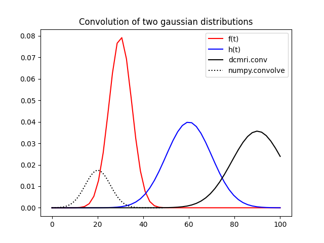
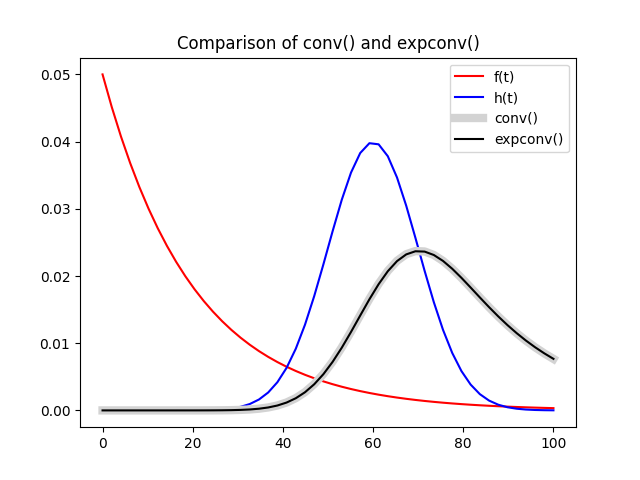
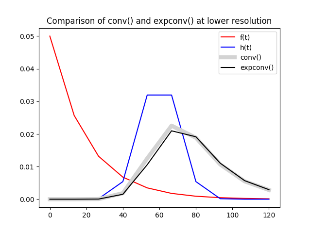
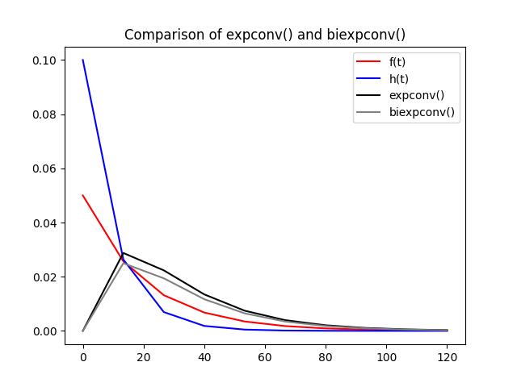
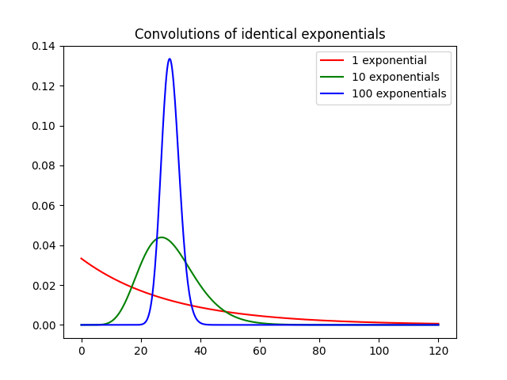
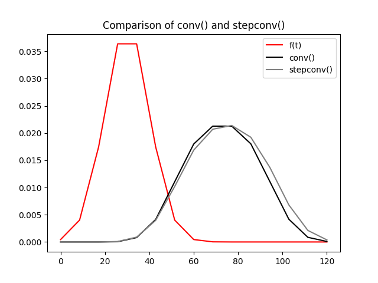

Note
Go to the end to download the full example code.
Convolution#
Convolution is a key operation in any application of pharmacokinetic
analysis. The reason for this central role is that the solution of a linear
and stationary system can always be written as a convolution. dcmri includes
functions that
perform convolution in the most general context, but also includes solutions
that are optimized for common special cases.
This tutorial illustrates the use of these functions and compares their performance against other implementations.
Setup#
Import the necessary packages
import time
import numpy as np
from scipy.stats import norm
import matplotlib.pyplot as plt
import dcmri as dc
Convolving any two functions#
There are different definitions possible for the convolution product, and
they are not necessarily interchangeable. We illustrate this here by
convolving two functions with conv and comparing the result to
a naive application of numpy.convolve. For the purposes of this
illustration we will convolve normalized gaussian distributions f(t) and
h(t):
# Generate some gaussian data
t = np.linspace(0, 100, 50)
f = norm.pdf(t, 30, 5)
h = norm.pdf(t, 60, 10)
# Convolve them in two different ways:
g = dc.conv(h, f, t)
g1 = np.convolve(h, f, mode='same')
# Show the data and their convolutions
plt.plot(t, f, 'r-', label='f(t)')
plt.plot(t, h, 'b-', label='h(t)')
plt.plot(t, g, 'k-', label='dcmri.conv')
plt.plot(g1, 'k:', label='numpy.convolve')
plt.title('Convolution of two gaussian distributions')
plt.legend()
plt.show()

While there is clearly some relation between both results, they are not in
any way similar. The convolve result is shifted compared to
conv and has a lower amplitude. This shows that caution is needed
when applying convolution formulae from different libraries in a
tracer-kinetic setting.
Convolution with an exponential#
The generic function conv applies to any two functions, but is
uneccesarily slow in special cases where the functional form of the
factors is known. An example is the case where one of the
factors is an exponential function - a very common scenario in
pharmacokinetics. In that case the function expconv can be used:
# Convolve the Gaussian with an exponential explicitly:
Tf = 20
f = np.exp(-t/Tf)/Tf
g0 = dc.conv(h, f, t)
# Now convolve the same data again using the expconv function:
g1 = dc.expconv(h, Tf, t)
# Compare the two results on the same plot:
plt.plot(t, f, 'r-', label='f(t)')
plt.plot(t, h, 'b-', label='h(t)')
plt.plot(t, g0, label='conv()', linewidth=6, color='lightgray', linestyle='-')
plt.plot(t, g1, 'k-', label='expconv()')
plt.title('Comparison of conv() and expconv()')
plt.legend()
plt.show()

The result shows that the difference in accuracy between expconv
and conv is negligible at higher time resolution.
However, expconv comes with a major improvement in computation
time. We illustrate the effect by
applying the functions 500 times and measuring the total computation time
in each case:
# Print the duration of 500 runs of conv:
start = time.time()
for _ in range(500):
dc.conv(h, f, t)
print('Computation time for conv(): ', time.time()-start, 'sec')
# Print the duration of 500 runs of expconv:
start = time.time()
for _ in range(500):
dc.expconv(h, Tf, t)
print('Computation time for expconv(): ', time.time()-start, 'sec')
Computation time for conv(): 0.011876106262207031 sec
Computation time for expconv(): 0.009646892547607422 sec
The acceleration is 2 orders of magnitude. Incidentally since the
time array in this case is uniform, conv
can be accelerated by specifying dt instead of t in the arguments. However
the performance remains far below expconv:
Computation time for conv(): 0.0047130584716796875 sec
The difference in accuracy between conv and expconv
becomes more apparent at lower temporal resolution but generally remains
minor. Using 10 time points instead of 50 as above we start seeing some
effect:
# Generate Gaussian and exponential at low temporal resolution:
t = np.linspace(0, 120, 10)
h = norm.pdf(t, 60, 10)
f = np.exp(-t/Tf)/Tf
# Convolve the Gaussian with the exponential in two different ways:
g0 = dc.conv(h, f, t)
g1 = dc.expconv(h, Tf, t)
# Compare the result on the same plot:
plt.plot(t, f, 'r-', label='f(t)')
plt.plot(t, h, 'b-', label='h(t)')
plt.plot(t, g0, label='conv()', linewidth=6, color='lightgray', linestyle='-')
plt.plot(t, g1, 'k-', label='expconv()')
plt.title('Comparison of conv() and expconv() at lower resolution')
plt.legend()
plt.show()

Convolving two or more exponentials#
If both functions are exponentials, convolution can be accelerated further
with biexpconv, which uses an analytical formula to calculate the
convolution:
# Create and exponential dataset:
Th = 10
h = np.exp(-t/Th)/Th
# Print the duration of 1000 runs of expconv:
start = time.time()
for i in range(1000):
dc.expconv(h, Tf, t)
print('Computation time for expconv(): ', time.time()-start, 'sec')
# Print the duration of 1000 runs of biexpconv:
start = time.time()
for i in range(1000):
dc.biexpconv(Th, Tf, t)
print('Computation time for biexpconv(): ', time.time()-start, 'sec')
Computation time for expconv(): 0.00981903076171875 sec
Computation time for biexpconv(): 0.003396272659301758 sec
The difference in computation time is small in this case, but using an analytical formula also comes with some improvements in accuracy. This is apparent at lower time resolution:
# Compute a bioexponential convolution with expconv:
g0 = dc.expconv(h, Tf, t)
# Compute a biexponential convolution with biexpconv:
g1 = dc.biexpconv(Th, Tf, t)
# Compare the results on the same plot:
plt.plot(t, f, 'r-', label='f(t)')
plt.plot(t, h, 'b-', label='h(t)')
plt.plot(t, g0, 'k-', label='expconv()')
plt.plot(t, g1, color='gray', linestyle='-', label='biexpconv()')
plt.title('Comparison of expconv() and biexpconv()')
plt.legend()
plt.show()

The final convolution function nexpconv convolves n indentical
exponentials with mean transit time T analytically. We illustrate the
result by keeping the total mean transit time MTT=nT constant, and
increasing n from 1 to 100. As the number of exponentials increases, the
convolution converges to a delta function positioned on t=MTT:
# Convolve 1, 10 and 100 indentical exponentials with the same total MTT:
MTT = 30
t = np.linspace(0, 120, 500)
g1 = dc.nexpconv(1, MTT/1, t)
g10 = dc.nexpconv(10, MTT/10, t)
g100 = dc.nexpconv(100, MTT/100, t)
# Compare the results on the same plot
plt.plot(t, g1, 'r-', label='1 exponential')
plt.plot(t, g10, 'g-', label='10 exponentials')
plt.plot(t, g100, 'b-', label='100 exponentials')
plt.title('Convolutions of identical exponentials')
plt.legend()
plt.show()

Convolution with a step function#
dcmri also provides a dedicated function stepconv for
convolution with a step function. We illustrate this function here and
compare against conv:
# Generate some Gaussian data:
n = 15
t = np.linspace(0, 120, n)
f = norm.pdf(t, 30, 10)
T, D = 45, 0.5
# Construct a step function explicitly:
T0, T1 = T-D*T, T+D*T
h = np.zeros(n)
h[(t>=T0)*(t<=T1)] = 1/(T1-T0)
# Convolve the step function with the Gaussian using conv:
g0 = dc.conv(h, f, t)
# Convolve the step function with the Gaussian using stepconv:
g1 = dc.stepconv(f, T, D, t)
# Compare the results on the same plot:
plt.plot(t, f, 'r-', label='f(t)')
plt.plot(t, g0, 'k-', label='conv()')
plt.plot(t, g1, color='gray', linestyle='-', label='stepconv()')
plt.title('Comparison of conv() and stepconv()')
plt.legend()
plt.show()

As with expconv the difference between stepconv and
conv is relatively small even for coarse time grids such as the
above. Also the gain in computation time is modest:
# Print the computation time for 500 runs of conv:
start = time.time()
for _ in range(500):
dc.conv(h, f, t)
print('Computation time for conv(): ', time.time()-start, 'sec')
# Print the computation time for 500 runs of stepconv:
start = time.time()
for _ in range(500):
dc.stepconv(f, T, D, t)
print('Computation time for stepconv(): ', time.time()-start, 'sec')
Computation time for conv(): 0.011461734771728516 sec
Computation time for stepconv(): 0.06610870361328125 sec
Total running time of the script: (0 minutes 0.383 seconds)